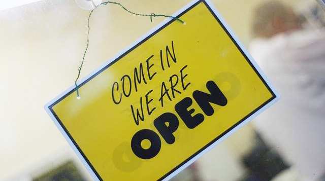

As Franchise Network Coordinator at the Open Data Institute (ODI), creating a culture of openness is essential to my role in building the network of ODI Nodes. Bringing together the diverse perspectives, skills and experiences from members across the world has provided a huge learning opportunity, both for myself and the ODI, and has helped us to succeed in establishing and progressing the network and its impact.
 Image: Blink And You’ll Miss It! by Pete, (CC BY 2.0)
In order to succeed in our mission – to connect, equip and inspire people around the world to innovate with data – the ODI must advocate and practise openness. Open data is data that anyone can access, use and share, and these principles have been influencing a shift towards a more open culture; driving transparency, creating efficiencies and strengthening community engagement.
Working with ODI Nodes, I have found that the key is to connect people around a shared challenge, common need or interest – something that each person is invested in. I believe that the best approach to advocating an open culture, has been to demonstrate one. Whether we show it through the tools we use, the processes we adopt and the approach we embed across the organisation, openness is key to how we interact with our networks, helping us to build positive and collaborative relationships.
Encouraging a global conversation
ODI Nodes are local franchises located around the world that enable us to scale activities such as training, events and membership. The nodes and the ODI benefit from sharing expertise to develop products and deliver local projects. Implementing tools that enable collaboration has encouraged interaction and peer support across the network.
For example, Google Docs are a collaborative tool for creating content because it allows us to share that content with individual people or across groups. The creator of a Google Doc can edit permissions to enable or restrict levels of ownership, access and usage to others – whether people can view, comment, edit or share it.
The node agreement is one example of where this tool has been used. The document is accessible online to anyone in the public. Individuals can view all information about what it means to become a node, from the fees, commitments (metrics and products) and policies that inform the agreement. They can also add comments and ask questions regarding these aspects within the document, so it acts as an open forum for conversation and sharing information. Producing this information in this way helps to demonstrates the approach we take to developing partnerships and communicating with our networks. From their first interaction, people can get a sense of our commitment to openness and assess their alignment with opportunity along with the ODI’s values.
Benefits of using tools, to increase levels of open include:
- more people can engage – people can interact from any place in the world
- it stimulates conversation – everyone can gain insight from Q&A’s, build upon previous comments and even contribute answers or solutions
- communication is streamlined – people can see the evolution of the content avoiding repeated questions and removing the requirement for calls or meetings, where a light-touch response is sufficient.
The challenges of using tools to increase levels of open include:
- lack of ownership – it can be difficult to identify or disseminate responsibility of tasks when multiple people are interacting on an open tool
- clarity – it can be confusing to navigate content or conversations to find key information
- encouraging engagement – people aren’t used to working in this way and so fear (i.e. of presenting yourself in a public forum) can prevent engagement and open conversation).
Tools for applying open practices
As advocated by the ODI, my experience of managing a global community has shown me that there are huge benefits of an open culture. By implementing tools that give us flexibility to apply open practices, it has been possible to create culture change, developing towards a more open future.
The Data Spectrum is a tool we use at the ODI to map data against conditions of access and usability, identifying five stages between closed, shared and open data. It can help people understand that it is not always possible or appropriate for data to be open, and that there is a journey in transforming data from closed to open. This scale can also be applied to culture.

The ODI uses a number of tools and technologies to support the whole of the data spectrum, to enable better collaborative working. Other examples include:
- our ODI company dashboards – public data visualisations about the ODI’s targets and our ongoing progress against them
- training content – materials from our training courses are open for anyone to access, use and share under a CC-BY-SA licence
- Using SLACK – a communications tool for managing group and individual conversations
- policy positions – we welcome feedback and contributions from the public to help form ideas around our work (i.e. our personal data principles draft proposal)
- daily stand-ups – each morning everyone in the ODI team gets together (in-person or via Google Hangout) to share daily priorities or key news.
These tools could be used in a different way to progress from a shared to an open approach. For example, ODI Node network calls could be streamed or broadcasted publicly, widening the potential number of people engaged. We could also open up access to our daily stand up so that anyone can join and hear what the team is up to.
Knowledge for everyone
These tools and processes enable people to access, use and share knowledge and expertise with one another, though a greater challenge can be encouraging individuals to actually do this.
People must see the personal benefits of working collaboratively, and operating openly, for them to do so. Many people still have fears of working in this way – of being exposed to judgement or of losing their value by offering it to others.
The development of the ODI’s Node network demonstrates the approach we have taken to working at the ODI. Together, early members co-designed the network, including its direction, structure and metrics. The network has helped support global organisations to build awareness and support local initiatives in open data. This has directly contributed to the ODI’s mission to connect, equip, and inspire people to innovate with data.
At the ODI, we continue to explore ways to improve the way we work, by making it more open.
If you have ideas or experience in open data that you’d like to share, pitch us a blog or tweet us at @ODIHQ.